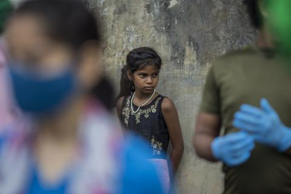
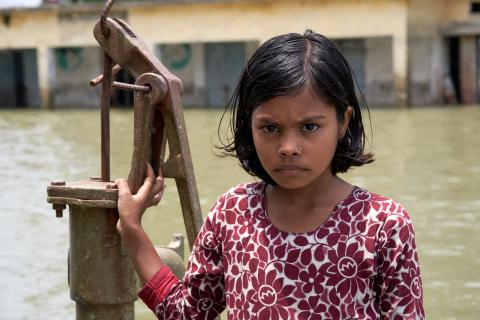
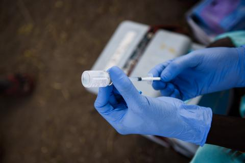

-

코로나19로 조혼 위험에 빠진 어린이 1천 만명 증가
조혼 근절을 위한 많은 노력에도 불구하고 코로나19 이전부터 여자 어린이 1억 명은 10년 새 조혼할 위험에 놓여 있었습니다.
후원하기 -

전 세계 어린이 5명 중 1명은 물이 부족한 상황
물 부족이 미치는 피해는 모두가 느낄 수 있지만, 취약 지역에 사는 어린이가 가장 심각한 고통을 느낍니다.
후원하기 -

코로나19 터널 끝의 빛, 모두에게 비춰져야 합니다
코로나19 관련 대응 조치로 어린이의 안전과 행복, 미래가 큰 타격을 입었습니다.
후원하기 -
여러분의 손길로 아이들의 웃음을 되찾게 해주세요
우리에게는 적은 돈일수도 있으나 난민 친구들에게는 목숨을 살릴 수 있는 중요한 의약품을 살 수 있습니다.
후원하기
어린이를 위기에서 지키는 약속,
Unicef Promise 링
For [#every child], Promise again
계속되는 재난들로 전 세계적인 위기 상황인 지금, 어린이들은 위험에 처해있습니다
그 어느 때보다 특별한 약속이 필요한 [#어린이]를 위해 유니세프 Promise 링이 다시 한번 여러분과의 약속을 만들고자 합니다
유니세프 Promise 링은
Unicef Promise Ring
-
[#어린이]를 위한 더 많은 약속
더 많은 사람들이 [#어린이]를 위해
약속할 수 있도록 그 의미를 알려주세요당신의 손 위에서 빛나는 유니세프 Promise 링은
[#어린이]를 위한 더 많은 약속을 가져옵니다 -
[#어린이]의 안전을 위한 약속
유니세프 Promise 링은 더 많은 [#어린이]가
세상의 위협으로부터 지켜지기 바라는 후원자님들의
바람을 담아 옷핀 모양으로 만들어졌습니다단단하게 잠겨져 있는 옷핀처럼 [#어린이]들이
위험한 상황으로부터 안전하기를 바랍니다 -
[#어린이]와 늘 함께한다는 약속
유니세프 Promise 링엔 유니세프 후원자로서
위험에 처한 어린이를 도와 늘 함께하겠다는
후원자님들의 가장 가치있는 약속이 담겨져 있습니다
For [#every child], Promise again
이번 캠페인을 통해 어린이를 지키는 정기후원을 시작하신 분께는
당신의 약속의 상징, 유니세프 Promise 링이 전달됩니다